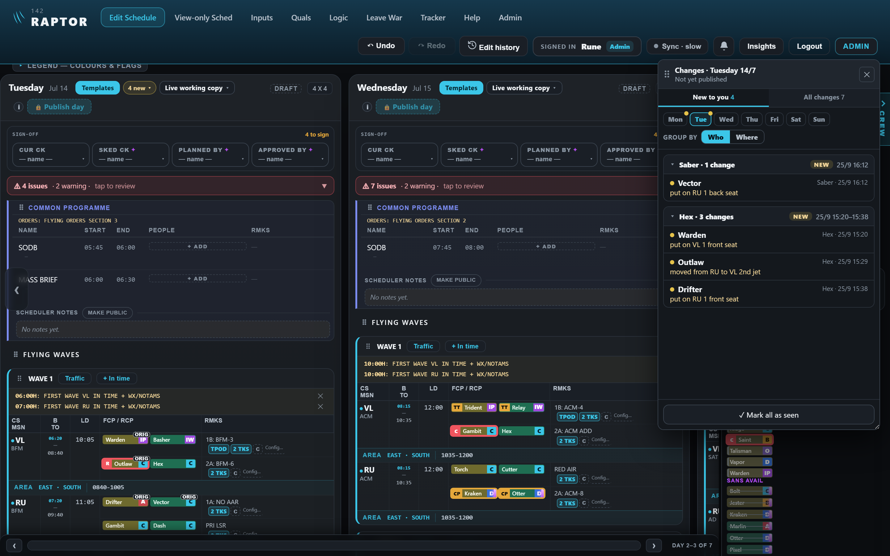
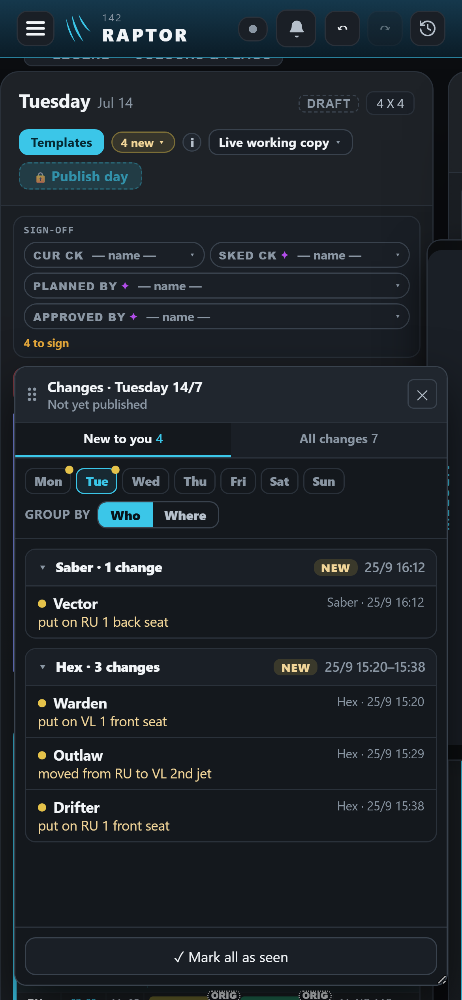
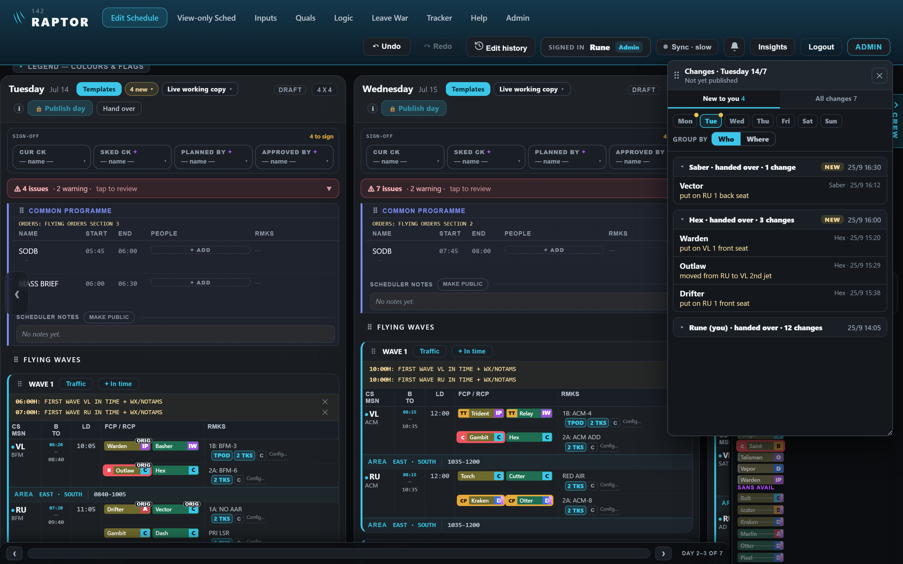
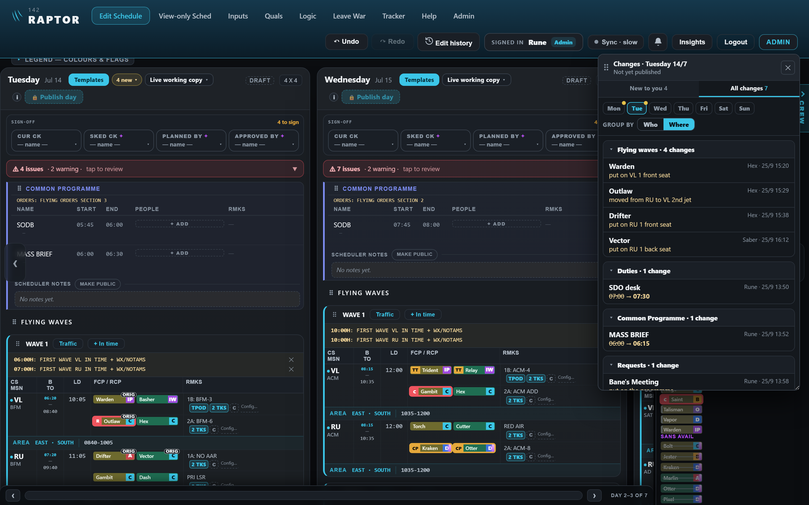
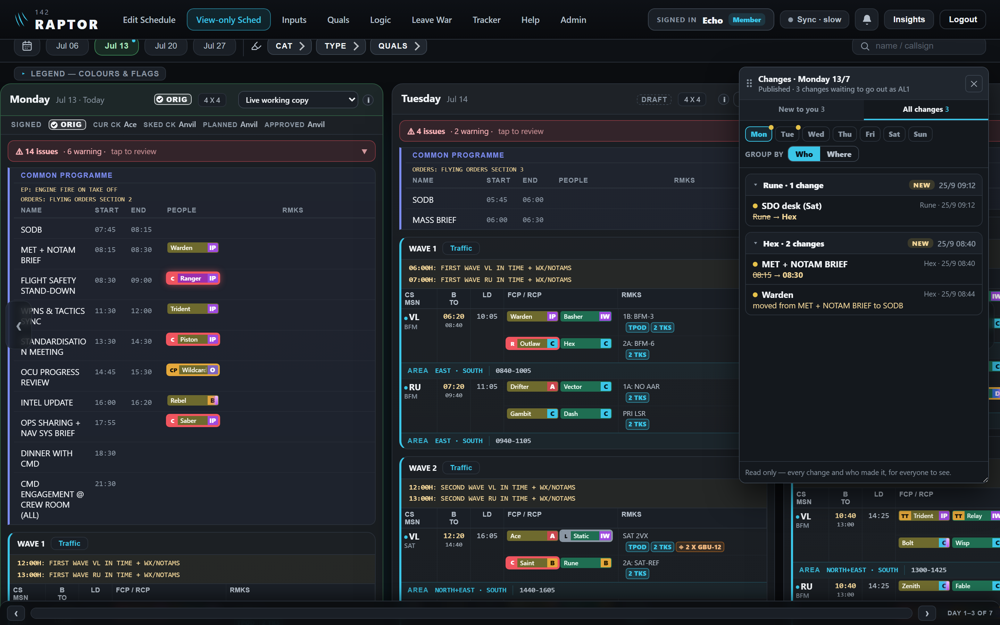
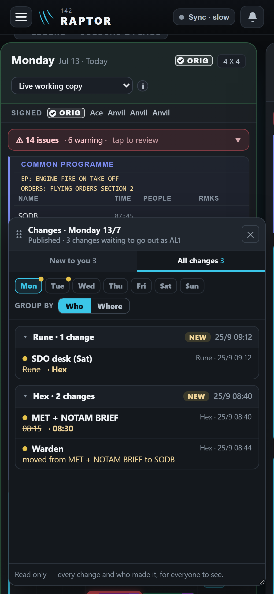

One changes window — with or without Hand over (mock-up)
Drawn on the real app. Everyone is signed in as their own callsign. The window is the ALL AVAIL window's design (move it by the grip, resize it by the corner, keep working behind it). Inside: New to you and All changes tabs, a day picker (a gold dot marks days with something new), and Group by Who / Where.
A · Without Hand over (recommended) — Rune, Tuesday not yet published
Changes by others are new to you (gold dot, NEW) until you press "Mark all as seen". The app groups them by person and sitting on its own ("Hex · 25/9 15:20–15:38 · 3 changes"). No button in the day heading.


B · With Hand over, for comparison
The same window, but the groups are hand overs ("Hex · handed over · 25/9 16:00"), and every scheduler has a Hand over button in the day heading to press when they finish.

What changes between A and B
| A · Without Hand over | B · With Hand over | |
|---|---|---|
| What you press | Nothing while working. "Mark all as seen" when you have checked others' changes. | "Hand over" every time you finish, and still read others' changes. |
| If someone forgets | Nothing to forget — the app groups their changes by itself. | Their changes sit as "still working" with no hand-over date. |
| What it tells others | Who changed what, and when (every line). | The same, plus "I'm done" — a signal that has no other effect. |
| Day heading | Only the "N new" button. | "N new" plus a Hand over button, and a "last handed over" line. |
| Once accounts exist | Fits naturally — like unread email. | Mostly a habit left over from the shared login. |
Recommendation: A. It is less to remember, nothing breaks if someone forgets, and every line already says who and when.
C · "All changes", grouped by Where
The same changes grouped by the day's own sections — Flying waves, Duties, Common Programme, Requests — handy to check just one part of the day.

D · A member's view — full transparency
Echo (a member) on View-only Sched opens Monday's live working copy: every change and who made it, read-only. The top line shows the point of it — Rune took himself off the Saturday SDO desk and put Hex on it, and everyone can see that. A medical input's details stay hidden from members (they read "a medical input").

